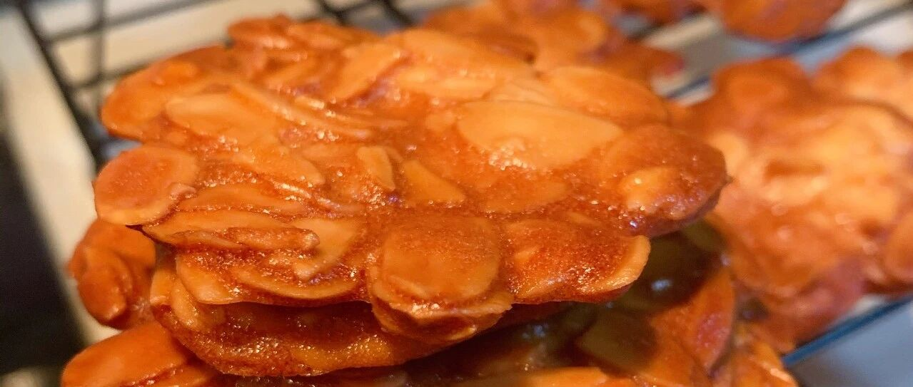

杏仁蛋白瓦片 - 消耗蛋白的好方法+1
柠檬酱的残余烘焙原料之一，五个蛋白，真的够受的。所以介绍几个消耗蛋白的好方法。
蛋白芝麻脆片
这个我特别喜欢吃，但是外面的瓦片真的好贵，呜呜。还是自己做吧，实现杏仁瓦片自由！！

原方的糖是70g，我觉得太甜了，减到50g也很不错的。原方是黄油，我懒，直接用的植物油，已经非常好吃了。黄油想必更香。
蛋白不需要打发，搅打出小泡即可。

其实我这里，加入低粉以后，用的刮刀拌匀的。
这里用了80g的杏仁片，烤出来的样子也很棒了，因为我就剩这些了。。。125g应该更加立体丰富吧。

摊平的时候，一定要摊薄一点，就一层就好。

烤的过程中，面和糖会膨胀，我还害怕没这么立体，烤好了就很好看了，不用担心。
一定要焦糖色才好看好吃哦。


如果用模具，会更加好看的，没有模具，也不用勉强，生活还是要讲究个随性吧。哈哈
这是125g杏仁片的样子，是不是层次更丰富？真好吃！